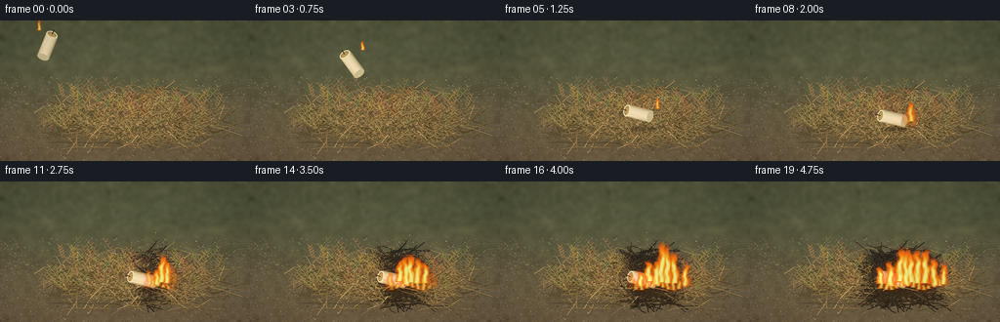
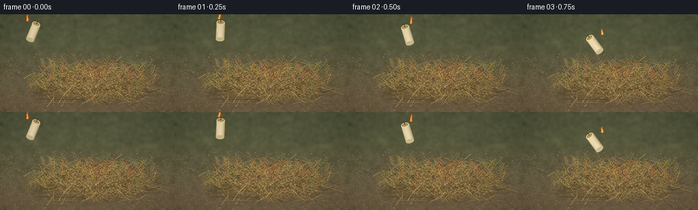
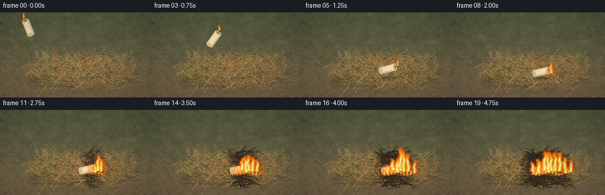
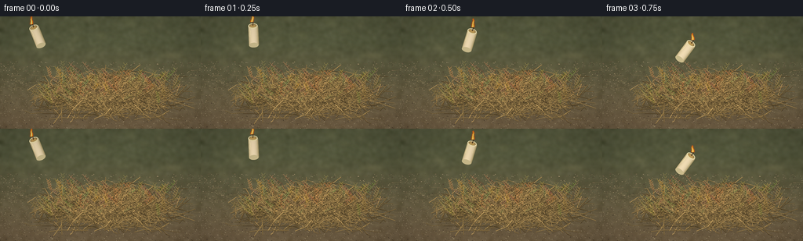

CODING AGENTS AS PIXEL WORLD MODELS
traex/GPT-6.1-Sol · phygen_144
点击播放 · 原生 RGB 像素
逐轮保存的候选
回放视频、检查图与代码变化。
每份候选均可单独播放。实际图片检查记录在下方工具轨迹中。
候选 01播放与检查图
点击播放 · 原生 RGB 像素


展开代码变化
--- 上一保存版本
+++ 本次保存版本
@@ -0,0 +1,245 @@
+from pathlib import Path
+import math
+import numpy as np
+from PIL import Image, ImageDraw, ImageFilter
+import artifact_io
+
+ROOT=Path(__file__).resolve().parent
+W,H=256,144
+S=4
+rng=np.random.default_rng(2147)
+
+def line(draw, pts, fill, width=1):
+ draw.line([(int(x*S),int(y*S)) for x,y in pts], fill=fill, width=max(1,round(width*S)))
+
+def ellipse(draw,box,fill):
+ draw.ellipse(tuple(int(v*S) for v in box),fill=fill)
+
+# A softly defocused, sunlit patch of bare earth behind the dry grass.
+yy,xx=np.mgrid[0:H*S,0:W*S].astype(float)
+x=xx/S;y=yy/S
+base=np.zeros((H*S,W*S,3),float)
+a=np.clip((y-33)/102,0,1)[...,None]
+base[:]=(1-a)*np.array([91,95,66])+a*np.array([118,100,73])
+noise=rng.normal(0,1,(H*S,W*S))
+sm=np.asarray(Image.fromarray(np.uint8(np.clip(128+noise*35,0,255))).filter(ImageFilter.GaussianBlur(7)),float)-128
+base+=sm[...,None]*1.8
+base+=rng.normal(0,1.3,base.shape)
+bg=Image.fromarray(np.uint8(np.clip(base,0,255))).convert('RGB')
+blur=Image.new('RGBA',bg.size)
+d=ImageDraw.Draw(blur)
+for i in range(700):
+ px=rng.uniform(-12,267); py=rng.uniform(-10,85)
+ c=tuple(int(v) for v in rng.choice(np.array([[102,103,70],[70,76,51],[151,142,101],[123,122,82],[75,81,59]])))+(rng.integers(22,90).item(),)
+ r=rng.uniform(1,7)
+ ellipse(d,(px-r,py-r*.45,px+r,py+r*.45),c)
+ if i%4==0: line(d,[(px,py+6),(px+r,py-r*2)],c,.7)
+bg=Image.alpha_composite(bg.convert('RGBA'),blur.filter(ImageFilter.GaussianBlur(3*S))).convert('RGB')
+d=ImageDraw.Draw(bg)
+for i in range(2400):
+ px=rng.uniform(0,256);py=rng.uniform(58,145)
+ r=rng.uniform(.08,.6)
+ c=rng.choice(np.array([[77,65,49],[130,111,84],[154,137,106],[100,85,63],[164,145,109]]))
+ ellipse(d,(px-r,py-r*.55,px+r,py+r*.55),tuple(c))
+# Individual short dry blades on the soil.
+for i in range(180):
+ px=rng.uniform(0,256);py=rng.uniform(63,151)
+ leng=rng.uniform(3,14);ang=rng.uniform(-math.pi,math.pi)
+ line(d,[(px,py),(px+leng*math.cos(ang),py+leng*math.sin(ang)*.38)],(139,121,84),.35)
+
+shadow=Image.new('RGBA',bg.size);d=ImageDraw.Draw(shadow)
+for k in range(15):
+ ellipse(d,(46+k*.9,93+k*.35,227-k*.9,139-k*.4),(36,27,16,8+k))
+bg=Image.alpha_composite(bg.convert('RGBA'),shadow.filter(ImageFilter.GaussianBlur(3*S)))
+# A layered mound of wiry dry grass and straw. Sorted back-to-front,
+# with each strand having a shaded edge, a lit face and slight bends.
+straw=[]
+for i in range(2100):
+ px=np.clip(rng.normal(139,34),43,232)
+ py=np.clip(rng.normal(106,11),77,135)
+ mound=math.exp(-((px-139)/67)**2)
+ py-=7*mound
+ length=rng.uniform(9,38)
+ if i<350:length=rng.uniform(25,56)
+ angle=rng.uniform(0,math.tau)
+ dx=math.cos(angle)*length*.5;dy=math.sin(angle)*length*.23
+ bend=rng.uniform(-4,4)
+ pts=[(px-dx,py-dy),(px-dx*.4,py-dy*.35+bend*.45),(px+dx*.3,py+dy*.35+bend),(px+dx,py+dy)]
+ v=rng.uniform(.65,1.18)
+ c=tuple(int(min(255,z*v)) for z in (187,153,93))
+ width=rng.uniform(.27,.67)
+ straw.append((py,pts,c,width,rng.random()))
+straw.sort(key=lambda e:e[0])
+# branchy seed-bearing grass stems help the pile read as grass, rather than sticks.
+for i in range(140):
+ px=rng.uniform(58,220);py=rng.uniform(82,117)
+ leng=rng.uniform(12,36);dx=rng.uniform(-24,24)
+ pts=[(px,py+5),(px+dx*.4,py-leng*.4),(px+dx,py-leng*.7)]
+ c=(int(rng.integers(130,191)),int(rng.integers(112,149)),int(rng.integers(65,88)))
+ straw.append((py-6,pts,c,.36,.2))
+straw.sort(key=lambda e:e[0])
+
+def draw_straw(im, cutoff=None, time=0, foreground=False):
+ dr=ImageDraw.Draw(im)
+ for depth,pts,col,wd,kind in straw:
+ if foreground and depth<108:continue
+ if cutoff is not None and depth>=cutoff:continue
+ p=np.array(pts)
+ # Later, the closest grass blackens only under the newly spread fire.
+ dist=abs(p[1,0]-157)
+ burning=max(0,(time-1.6)*14)
+ char=np.clip((burning-dist)/16,0,.78) if time>1.6 else 0
+ c=tuple(int(v*(1-char)+26*char) for v in col)
+ line(dr,[(a,b+.26) for a,b in p],tuple(int(v*.49) for v in c),wd+.4)
+ line(dr,p,c,wd)
+ if kind>.7:
+ for q in [.4,.7]:
+ pp=p[0]*(1-q)+p[-1]*q
+ line(dr,[(pp[0]-.6,pp[1]-.5),(pp[0]+.65,pp[1]+.55)],tuple(min(255,int(v*1.17)) for v in c),.3)
+ if len(pts)==3:
+ for q in np.linspace(.45,.95,5):
+ pp=p[0]*(1-q)+p[-1]*q
+ for sg in [-1,1]:
+ line(dr,[pp,(pp[0]+sg*2.4,pp[1]-2.8)],c,.4)
+ return im
+
+# A tiny cylinder model drawn as a shaded wax sprite, then tumbled.
+def candle(im,cx,cy,angle,t):
+ sp=Image.new('RGBA',(40*S,48*S));dr=ImageDraw.Draw(sp)
+ # Candle is local x=20, top=9, bottom=36.
+ for j in range(48):
+ u=j/47
+ v=math.sqrt(max(0,1-(2*u-1)**2))
+ c=(int(170+69*v+12*(1-u)),int(153+66*v+10*(1-u)),int(106+74*v+7*(1-u)),255)
+ dr.rectangle((int((14+12*u)*S),11*S,int((14+12*(u+1/47))*S)+1,35*S),fill=c)
+ ellipse(dr,(14,32,26,38),(204,189,142,255))
+ ellipse(dr,(14,7,26,14),(241,225,174,255))
+ ellipse(dr,(15.3,8.2,24.8,12.4),(158,132,83,255))
+ ellipse(dr,(16.3,9,23.7,12),(193,157,88,255))
+ # Irregular cooled wax drips catching the light.
+ line(dr,[(15.4,12),(16,17),(15.7,24)],(248,230,179,255),.9)
+ line(dr,[(24.4,12),(23.8,19),(24,22)],(228,211,162,255),.8)
+ ellipse(dr,(15.25,21.5,16.4,25),(239,221,171,255))
+ line(dr,[(20,10),(20.4,6),(19.8,4.8)],(48,32,20,255),.8)
+ # Rotate the full sprite about its center, which is the candle's center.
+ rot=sp.rotate(angle,Image.Resampling.BICUBIC,expand=True)
+ im.alpha_composite(rot,(int(cx*S-rot.width/2),int(cy*S-rot.height/2)))
+ # PIL's positive rotation sends the top rightwards. Wick base local y=5,
+ # with the center at y=24.
+ rad=math.radians(angle)
+ return cx-1*math.cos(rad)-(-19)*math.sin(rad), cy-1*math.sin(rad)+(-19)*math.cos(rad)
+
+# Animated hot-gas fields, with several overlapping sheets of flame.
+fx,fy=np.meshgrid(np.arange(W*S)/S,np.arange(H*S)/S)
+def fire_layer(im,sources,t,small=False):
+ field=np.zeros((H*S,W*S),float)
+ heat=np.zeros_like(field)
+ for i,(bx,by,height,width,strength) in enumerate(sources):
+ z=(by-fy)/height
+ zz=np.clip(z,0,1)
+ phase=2.2*t+i*2.18
+ sway=(np.sin(zz*9-phase*4)+.44*np.sin(zz*22+phase*5+i))*width*.20*zz
+ sway+=math.sin(t*5+i)*zz*2
+ center=bx+sway
+ width_at=width*(.23+.77*np.sqrt(np.clip(1-zz,0,1)))
+ # Fast billowing at the edges and pointed, asymmetric upper tips.
+ turb=(np.sin(fx*.73+fy*.38+t*9+i)+.45*np.sin(fx*1.51-fy*.52-t*13+i))*0.13
+ radial=np.abs(fx-center)/np.maximum(width_at,.25)
+ val=np.clip((1-radial+turb)*2,0,1)*np.clip((1-z)*6,0,1)
+ val*=((z>=-.025)&(z<1.0))
+ field=np.maximum(field,val*strength)
+ inner=np.clip((.54-radial+turb*.6)*2.4,0,1)*np.clip((.84-z)*3.5,0,1)
+ inner*=((z>=0)&(z<1))
+ heat=np.maximum(heat,inner*strength)
+ rgba=np.zeros((H*S,W*S,4),np.uint8)
+ # Dim red edges, saturated orange surfaces, yellow and ivory cores.
+ edge=np.clip(field*2.0,0,1)
+ rgba[...,0]=np.clip(212+edge*42+heat*1,0,255)
+ rgba[...,1]=np.clip(45+edge*62+heat*143,0,255)
+ rgba[...,2]=np.clip(8+edge*8+heat**2*125,0,255)
+ rgba[...,3]=np.clip(field*.9*255,0,246)
+ fl=Image.fromarray(rgba,'RGBA')
+ glow=fl.filter(ImageFilter.GaussianBlur((1.2 if small else 2.6)*S))
+ g=np.asarray(glow).copy();g[...,3]=(g[...,3]*.33).astype(np.uint8)
+ im=Image.alpha_composite(im,Image.fromarray(g))
+ return Image.alpha_composite(im,fl)
+
+frames=[]
+for k in range(20):
+ t=k/4
+ im=bg.copy()
+ im=draw_straw(im,time=t)
+ # Airborne toss, with gravitational acceleration, followed by a short bounce.
+ if t<=1.25:
+ cx=48+76*t;cy=27-20*t+60*t*t
+ angle=-22+78*t
+ elif t<=1.5:
+ q=(t-1.25)/.25
+ cx=143+4*q;cy=95.75-6*math.sin(q*math.pi)+5*q;angle=75+9*math.sin(q*math.pi)
+ else:cx=147;cy=100.75;angle=77
+ sd=Image.new('RGBA',im.size);dd=ImageDraw.Draw(sd)
+ alt=max(0,100-cy)
+ ellipse(dd,(cx-14-alt*.1,109-alt*.01,cx+15+alt*.1,113+alt*.03),(25,20,12,int(65/(1+alt*.05))))
+ im=Image.alpha_composite(im,sd.filter(ImageFilter.GaussianBlur((1.3+alt*.035)*S)))
+ wickx,wicky=candle(im,cx,cy,angle,t)
+ # Some grass crosses the lower wax after contact; the candle remains visible.
+ if t>=1.5:
+ dr=ImageDraw.Draw(im)
+ line(dr,[(128,110),(150,107),(172,112)],(184,148,87),.65)
+ line(dr,[(136,112),(146,105),(158,110)],(225,190,117),.48)
+ # Smoke appears only after ignition and gently rises and drifts.
+ progress=max(0,t-1.4)
+ if progress>0.25:
+ sm=Image.new('RGBA',im.size);ds=ImageDraw.Draw(sm)
+ for j in range(45):
+ age=(j/44)*min(3,progress)
+ px=163+age*7+math.sin(j*2.3+t*1.4)*3
+ py=96-age*24
+ r=3+age*5
+ alpha=int((4+min(progress,2)*2.8)*(1-age/3.9))
+ ellipse(ds,(px-r,py-r*.7,px+r,py+r*.7),(84,81,73,alpha))
+ im=Image.alpha_composite(im,sm.filter(ImageFilter.GaussianBlur(3*S)))
+ # The wick flame stays upright even while the wax candle rotates.
+ flick=math.sin(t*15)*1.3+math.sin(t*23)*.5
+ if t<1.75:
+ im=fire_layer(im,[(wickx,wicky,11+flick,2.5,.98)],t,True)
+ else:
+ # The first grass touching the burning wick catches, then the burning
+ # front expands locally through the contiguous fine dry fuel.
+ spread=min(37,progress*13)
+ sources=[]
+ for j,offset in enumerate([0,-5,6,-12,14,-21,24,-31,33]):
+ onset=abs(offset)/13
+ a=max(0,progress-onset)
+ if a<=0:continue
+ strength=min(1,a*1.5)
+ bx=165+offset
+ by=103+abs(offset)*.10+math.sin(j*1.5)*2
+ ht=(13+min(32,a*13))*(.80+.19*math.sin(t*10+j*3))
+ sources.append((bx,by,ht,4.0+min(4.0,a*2),strength))
+ # Low wavering flames crawling along adjacent grass stems.
+ for j in range(12):
+ offset=(j-5.5)*5.5
+ a=max(0,progress-abs(offset)/13)
+ if a>.1:sources.append((164+offset,109+math.sin(j)*2,8+4*math.sin(t*11+j),3.5,min(.85,a)))
+ # A subtle warm light falls on the dry strands around the ignition point.
+ li=np.asarray(im).astype(float)
+ halo=np.exp(-((fx-162)/(20+progress*9))**2-((fy-106)/19)**2)*min(1,progress*.45)
+ li[...,:3]+=halo[...,None]*np.array([23,11,1])
+ im=Image.fromarray(np.uint8(np.clip(li,0,255)),'RGBA')
+ im=fire_layer(im,sources,t)
+ # A handful of incandescent flakes carried upward by convection.
+ ds=ImageDraw.Draw(im)
+ for j in range(7):
+ age=(t*.9+j*.19)%1.5
+ if progress<1 or age>1.2:continue
+ sx=162+math.sin(j*12)*20+age*7
+ sy=96-age*37
+ ellipse(ds,(sx-.24,sy-.7,sx+.24,sy+.25),(255,167,46,int(190*(1-age/1.5))))
+ # Mild optical falloff, retaining detail and rich natural color.
+ out=np.asarray(im.convert('RGB').resize((W,H),Image.Resampling.LANCZOS)).astype(float)
+ vx,vy=np.meshgrid(np.linspace(-1,1,W),np.linspace(-1,1,H))
+ vign=1-.11*(vx*vx+vy*vy)
+ out*=vign[...,None]
+ frames.append(np.uint8(np.clip(out,0,255)))
+artifact_io.save(np.stack(frames),ROOT)
候选 02播放与检查图
点击播放 · 原生 RGB 像素


展开代码变化
--- 上一保存版本
+++ 本次保存版本
@@ -124,10 +124,10 @@
# Rotate the full sprite about its center, which is the candle's center.
rot=sp.rotate(angle,Image.Resampling.BICUBIC,expand=True)
im.alpha_composite(rot,(int(cx*S-rot.width/2),int(cy*S-rot.height/2)))
- # PIL's positive rotation sends the top rightwards. Wick base local y=5,
+ # PIL's positive rotation turns counterclockwise. Wick base local y=5,
# with the center at y=24.
rad=math.radians(angle)
- return cx-1*math.cos(rad)-(-19)*math.sin(rad), cy-1*math.sin(rad)+(-19)*math.cos(rad)
+ return cx-1*math.cos(rad)+(-19)*math.sin(rad), cy+1*math.sin(rad)+(-19)*math.cos(rad)
# Animated hot-gas fields, with several overlapping sheets of flame.
fx,fy=np.meshgrid(np.arange(W*S)/S,np.arange(H*S)/S)
@@ -172,11 +172,11 @@
# Airborne toss, with gravitational acceleration, followed by a short bounce.
if t<=1.25:
cx=48+76*t;cy=27-20*t+60*t*t
- angle=-22+78*t
+ angle=22-78*t
elif t<=1.5:
q=(t-1.25)/.25
- cx=143+4*q;cy=95.75-6*math.sin(q*math.pi)+5*q;angle=75+9*math.sin(q*math.pi)
- else:cx=147;cy=100.75;angle=77
+ cx=143+4*q;cy=95.75-6*math.sin(q*math.pi)+5*q;angle=-75-9*math.sin(q*math.pi)
+ else:cx=147;cy=100.75;angle=-77
sd=Image.new('RGBA',im.size);dd=ImageDraw.Draw(sd)
alt=max(0,100-cy)
ellipse(dd,(cx-14-alt*.1,109-alt*.01,cx+15+alt*.1,113+alt*.03),(25,20,12,int(65/(1+alt*.05))))
可观测工具轨迹
实际执行的命令与返回图片。
命令 1exit 0
/bin/bash -lc 'ls -la && cat prompt.txt && cat GENERATION_RULES.md && cat task_spec.json'
命令 2exit 0
/bin/bash -lc "cat artifact_io.py && python - <<'PY'
import PIL,numpy
print('PIL and numpy ready')
PY"命令 3exit 0
/bin/bash -lc "cat > generate.py <<'PY'
from pathlib import Path
import math
import numpy as np
from PIL import Image, ImageDraw, ImageFilter
import artifact_io
ROOT=Path(__file__).resolve().parent
W,H=256,144
S=4
rng=np.random.default_rng(2147)
def line(draw, pts, fill, width=1):
draw.line([(int(x*S),int(y*S)) for x,y in pts], fill=fill, width=max(1,round(width*S)))
def ellipse(draw,box,fill):
draw.ellipse(tuple(int(v*S) for v in box),fill=fill)
# A softly defocused, sunlit patch of bare earth behind the dry grass.
yy,xx=np.mgrid[0:H*S,0:W*S].astype(float)
x=xx/S;y=yy/S
base=np.zeros((H*S,W*S,3),float)
a=np.clip((y-33)/102,0,1)[...,None]
base[:]=(1-a)*np.array([91,95,66])+a*np.array([118,100,73])
noise=rng.normal(0,1,(H*S,W*S))
sm=np.asarray(Image.fromarray(np.uint8(np.clip(128+noise*35,0,255))).filter(ImageFilter.GaussianBlur(7)),float)-128
base+=sm[...,None]*1.8
base+=rng.normal(0,1.3,base.shape)
bg=Image.fromarray(np.uint8(np.clip(base,0,255))).convert('RGB')
blur=Image.new('RGBA',bg.size)
d=ImageDraw.Draw(blur)
for i in range(700):
px=rng.uniform(-12,267); py=rng.uniform(-10,85)
c=tuple(int(v) for v in rng.choice(np.array([[102,103,70],[70,76,51],[151,142,101],[123,122,82],[75,81,59]])))+(rng.integers(22,90).item(),)
r=rng.uniform(1,7)
ellipse(d,(px-r,py-r*.45,px+r,py+r*.45),c)
if i%4==0: line(d,[(px,py+6),(px+r,py-r*2)],c,.7)
bg=Image.alpha_composite(bg.convert('RGBA'),blur.filter(ImageFilter.GaussianBlur(3*S))).convert('RGB')
d=ImageDraw.Draw(bg)
for i in range(2400):
px=rng.uniform(0,256);py=rng.uniform(58,145)
r=rng.uniform(.08,.6)
c=rng.choice(np.array([[77,65,49],[130,111,84],[154,137,106],[100,85,63],[164,145,109]]))
ellipse(d,(px-r,py-r*.55,px+r,py+r*.55),tuple(c))
# Individual short dry blades on the soil.
for i in range(180):
px=rng.uniform(0,256);py=rng.uniform(63,151)
leng=rng.uniform(3,14);ang=rng.uniform(-math.pi,math.pi)
line(d,[(px,py),(px+leng*math.cos(ang),py+leng*math.sin(ang)*.38)],(139,121,84),.35)
shadow=Image.new('RGBA',bg.size);d=ImageDraw.Draw(shadow)
for k in range(15):
ellipse(d,(46+k*.9,93+k*.35,227-k*.9,139-k*.4),(36,27,16,8+k))
bg=Image.alpha_composite(bg.convert('RGBA'),shadow.filter(ImageFilter.GaussianBlur(3*S)))
# A layered mound of wiry dry grass and straw. Sorted back-to-front,
# with each strand having a shaded edge, a lit face and slight bends.
straw=[]
for i in range(2100):
px=np.clip(rng.normal(139,34),43,232)
py=np.clip(rng.normal(106,11),77,135)
mound=math.exp(-((px-139)/67)**2)
py-=7*mound
length=rng.uniform(9,38)
if i<350:length=rng.uniform(25,56)
angle=rng.uniform(0,math.tau)
dx=math.cos(angle)*length*.5;dy=math.sin(angle)*length*.23
bend=rng.uniform(-4,4)
pts=[(px-dx,py-dy),(px-dx*.4,py-dy*.35+bend*.45),(px+dx*.3,py+dy*.35+bend),(px+dx,py+dy)]
v=rng.uniform(.65,1.18)
c=tuple(int(min(255,z*v)) for z in (187,153,93))
width=rng.uniform(.27,.67)
straw.append((py,pts,c,width,rng.random()))
straw.sort(key=lambda e:e[0])
# branchy seed-bearing grass stems help the pile read as grass, rather than sticks.
for i in range(140):
px=rng.uniform(58,220);py=rng.uniform(82,117)
leng=rng.uniform(12,36);dx=rng.uniform(-24,24)
pts=[(px,py+5),(px+dx*.4,py-leng*.4),(px+dx,py-leng*.7)]
c=(int(rng.integers(130,191)),int(rng.integers(112,149)),int(rng.integers(65,88)))
straw.append((py-6,pts,c,.36,.2))
straw.sort(key=lambda e:e[0])
def draw_straw(im, cutoff=None, time=0, foreground=False):
dr=ImageDraw.Draw(im)
for depth,pts,col,wd,kind in straw:
if foreground and depth<108:continue
if cutoff is not None and depth>=cutoff:continue
p=np.array(pts)
# Later, the closest grass blackens only under the newly spread fire.
dist=abs(p[1,0]-157)
burning=max(0,(time-1.6)*14)
char=np.clip((burning-dist)/16,0,.78) if time>1.6 else 0
c=tuple(int(v*(1-char)+26*char) for v in col)
line(dr,[(a,b+.26) for a,b in p],tuple(int(v*.49) for v in c),wd+.4)
line(dr,p,c,wd)
if kind>.7:
for q in [.4,.7]:
pp=p[0]*(1-q)+p[-1]*q
line(dr,[(pp[0]-.6,pp[1]-.5),(pp[0]+.65,pp[1]+.55)],tuple(min(255,int(v*1.17)) for v in c),.3)
if len(pts)==3:
for q in np.linspace(.45,.95,5):
pp=p[0]*(1-q)+p[-1]*q
for sg in [-1,1]:
line(dr,[pp,(pp[0]+sg*2.4,pp[1]-2.8)],c,.4)
return im
# A tiny cylinder model drawn as a shaded wax sprite, then tumbled.
def candle(im,cx,cy,angle,t):
sp=Image.new('RGBA',(40*S,48*S));dr=ImageDraw.Draw(sp)
# Candle is local x=20, top=9, bottom=36.
for j in range(48):
u=j/47
v=math.sqrt(max(0,1-(2*u-1)**2))
c=(int(170+69*v+12*(1-u)),int(153+66*v+10*(1-u)),int(106+74*v+7*(1-u)),255)
dr.rectangle((int((14+12*u)*S),11*S,int((14+12*(u+1/47))*S)+1,35*S),fill=c)
ellipse(dr,(14,32,26,38),(204,189,142,255))
ellipse(dr,(14,7,26,14),(241,225,174,255))
ellipse(dr,(15.3,8.2,24.8,12.4),(158,132,83,255))
ellipse(dr,(16.3,9,23.7,12),(193,157,88,255))
# Irregular cooled wax drips catching the light.
line(dr,[(15.4,12),(16,17),(15.7,24)],(248,230,179,255),.9)
line(dr,[(24.4,12),(23.8,19),(24,22)],(228,211,162,255),.8)
ellipse(dr,(15.25,21.5,16.4,25),(239,221,171,255))
line(dr,[(20,10),(20.4,6),(19.8,4.8)],(48,32,20,255),.8)
# Rotate the full sprite about its center, which is the candle's center.
rot=sp.rotate(angle,Image.Resampling.BICUBIC,expand=True)
im.alpha_composite(rot,(int(cx*S-rot.width/2),int(cy*S-rot.height/2)))
# PIL's positive rotation sends the top rightwards. Wick base local y=5,
# with the center at y=24.
rad=math.radians(angle)
return cx-1*math.cos(rad)-(-19)*math.sin(rad), cy-1*math.sin(rad)+(-19)*math.cos(rad)
# Animated hot-gas fields, with several overlapping sheets of flame.
fx,fy=np.meshgrid(np.arange(W*S)/S,np.arange(H*S)/S)
def fire_layer(im,sources,t,small=False):
field=np.zeros((H*S,W*S),float)
heat=np.zeros_like(field)
for i,(bx,by,height,width,strength) in enumerate(sources):
z=(by-fy)/height
zz=np.clip(z,0,1)
phase=2.2*t+i*2.18
sway=(np.sin(zz*9-phase*4)+.44*np.sin(zz*22+phase*5+i))*width*.20*zz
sway+=math.sin(t*5+i)*zz*2
center=bx+sway
width_at=width*(.23+.77*np.sqrt(np.clip(1-zz,0,1)))
# Fast billowing at the edges and pointed, asymmetric upper tips.
turb=(np.sin(fx*.73+fy*.38+t*9+i)+.45*np.sin(fx*1.51-fy*.52-t*13+i))*0.13
radial=np.abs(fx-center)/np.maximum(width_at,.25)
val=np.clip((1-radial+turb)*2,0,1)*np.clip((1-z)*6,0,1)
val*=((z>=-.025)&(z<1.0))
field=np.maximum(field,val*strength)
inner=np.clip((.54-radial+turb*.6)*2.4,0,1)*np.clip((.84-z)*3.5,0,1)
inner*=((z>=0)&(z<1))
heat=np.maximum(heat,inner*strength)
rgba=np.zeros((H*S,W*S,4),np.uint8)
# Dim red edges, saturated orange surfaces, yellow and ivory cores.
edge=np.clip(field*2.0,0,1)
rgba[...,0]=np.clip(212+edge*42+heat*1,0,255)
rgba[...,1]=np.clip(45+edge*62+heat*143,0,255)
rgba[...,2]=np.clip(8+edge*8+heat**2*125,0,255)
rgba[...,3]=np.clip(field*.9*255,0,246)
fl=Image.fromarray(rgba,'RGBA')
glow=fl.filter(ImageFilter.GaussianBlur((1.2 if small else 2.6)*S))
g=np.asarray(glow).copy();g[...,3]=(g[...,3]*.33).astype(np.uint8)
im=Image.alpha_composite(im,Image.fromarray(g))
return Image.alpha_composite(im,fl)
frames=[]
for k in range(20):
t=k/4
im=bg.copy()
im=draw_straw(im,time=t)
# Airborne toss, with gravitational acceleration, followed by a short bounce.
if t<=1.25:
cx=48+76*t;cy=27-20*t+60*t*t
angle=-22+78*t
elif t<=1.5:
q=(t-1.25)/.25
cx=143+4*q;cy=95.75-6*math.sin(q*math.pi)+5*q;angle=75+9*math.sin(q*math.pi)
else:cx=147;cy=100.75;angle=77
sd=Image.new('RGBA',im.size);dd=ImageDraw.Draw(sd)
alt=max(0,100-cy)
ellipse(dd,(cx-14-alt*.1,109-alt*.01,cx+15+alt*.1,113+alt*.03),(25,20,12,int(65/(1+alt*.05))))
im=Image.alpha_composite(im,sd.filter(ImageFilter.GaussianBlur((1.3+alt*.035)*S)))
wickx,wicky=candle(im,cx,cy,angle,t)
# Some grass crosses the lower wax after contact; the candle remains visible.
if t>=1.5:
dr=ImageDraw.Draw(im)
line(dr,[(128,110),(150,107),(172,112)],(184,148,87),.65)
line(dr,[(136,112),(146,105),(158,110)],(225,190,117),.48)
# Smoke appears only after ignition and gently rises and drifts.
progress=max(0,t-1.4)
if progress>0.25:
sm=Image.new('RGBA',im.size);ds=ImageDraw.Draw(sm)
for j in range(45):
age=(j/44)*min(3,progress)
px=163+age*7+math.sin(j*2.3+t*1.4)*3
py=96-age*24
r=3+age*5
alpha=int((4+min(progress,2)*2.8)*(1-age/3.9))
ellipse(ds,(px-r,py-r*.7,px+r,py+r*.7),(84,81,73,alpha))
im=Image.alpha_composite(im,sm.filter(ImageFilter.GaussianBlur(3*S)))
# The wick flame stays upright even while the wax candle rotates.
flick=math.sin(t*15)*1.3+math.sin(t*23)*.5
if t<1.75:
im=fire_layer(im,[(wickx,wicky,11+flick,2.5,.98)],t,True)
else:
# The first grass touching the burning wick catches, then the burning
# front expands locally through the contiguous fine dry fuel.
spread=min(37,progress*13)
sources=[]
for j,offset in enumerate([0,-5,6,-12,14,-21,24,-31,33]):
onset=abs(offset)/13
a=max(0,progress-onset)
if a<=0:continue
strength=min(1,a*1.5)
bx=165+offset
by=103+abs(offset)*.10+math.sin(j*1.5)*2
ht=(13+min(32,a*13))*(.80+.19*math.sin(t*10+j*3))
sources.append((bx,by,ht,4.0+min(4.0,a*2),strength))
# Low wavering flames crawling along adjacent grass stems.
for j in range(12):
offset=(j-5.5)*5.5
a=max(0,progress-abs(offset)/13)
if a>.1:sources.append((164+offset,109+math.sin(j)*2,8+4*math.sin(t*11+j),3.5,min(.85,a)))
# A subtle warm light falls on the dry strands around the ignition point.
li=np.asarray(im).astype(float)
halo=np.exp(-((fx-162)/(20+progress*9))**2-((fy-106)/19)**2)*min(1,progress*.45)
li[...,:3]+=halo[...,None]*np.array([23,11,1])
im=Image.fromarray(np.uint8(np.clip(li,0,255)),'RGBA')
im=fire_layer(im,sources,t)
# A handful of incandescent flakes carried upward by convection.
ds=ImageDraw.Draw(im)
for j in range(7):
age=(t*.9+j*.19)%1.5
if progress<1 or age>1.2:continue
sx=162+math.sin(j*12)*20+age*7
sy=96-age*37
ellipse(ds,(sx-.24,sy-.7,sx+.24,sy+.25),(255,167,46,int(190*(1-age/1.5))))
# Mild optical falloff, retaining detail and rich natural color.
out=np.asarray(im.convert('RGB').resize((W,H),Image.Resampling.LANCZOS)).astype(float)
vx,vy=np.meshgrid(np.linspace(-1,1,W),np.linspace(-1,1,H))
vign=1-.11*(vx*vx+vy*vy)
out*=vign[...,None]
frames.append(np.uint8(np.clip(out,0,255)))
artifact_io.save(np.stack(frames),ROOT)
PY
python generate.py"命令 4exit 0
/bin/bash -lc "python - <<'PY'
p='generate.py'
s=open(p).read().replace(\"# PIL's positive rotation sends the top rightwards. Wick base local y=5,\", \"# PIL's positive rotation turns counterclockwise. Wick base local y=5,\")
s=s.replace('return cx-1*math.cos(rad)-(-19)*math.sin(rad), cy-1*math.sin(rad)+(-19)*math.cos(rad)', 'return cx-1*math.cos(rad)+(-19)*math.sin(rad), cy+1*math.sin(rad)+(-19)*math.cos(rad)')
s=s.replace('angle=-22+78*t','angle=22-78*t').replace('angle=75+9*math.sin(q*math.pi)','angle=-75-9*math.sin(q*math.pi)').replace('angle=77','angle=-77')
open(p,'w').write(s)
PY
python generate.py"视觉工具实际返回图片 1

视觉工具实际返回图片 2

保存候选 2 份；完成命令 4 次；可验证图片返回 2 张。原始 API 响应与完整日志保留在本地。